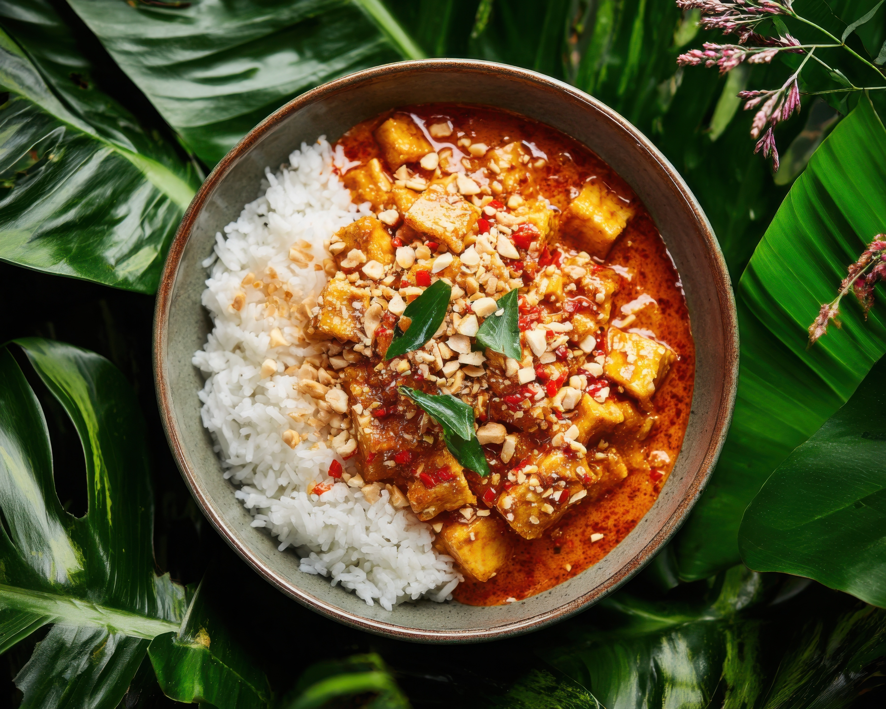

Eine rein pflanzliche Ernährung ist nicht so schwer, wie viele am Anfang denken. Kochen und essen ohne Tierischeprodukte, trägt nicht nur zum Tierwohl bei, sondern ist auch besser für das Klima und unsere Umwelt. Hier sind einfache vegane Rezepte:
Zutaten:
Zuerst alle trockenden Zutaten zusammen verrühren. Anschließend Öl, pflanzliche Milch und Mineralwasser hinzufügen. Alles gut verrühren. Nun das Waffeleisen warm werden lassen und mit etwas Öl/Margarine einfetten.
Zutaten:
Alles gut miteinander vermischen. Wenn alles gut verrührt ist, in kleinen Mengen in die Pfanne geben.
Zutaten:

Den Eiersatz, wie auf der Packung beschrieben, anrühren. Anschließend Mehl, Salz, pflanzliche Milch und den Eiersatz zusammenrühren. Wenn es eine gleichmäßige Masse ist, kann eine große Kelle Teig in die Pfanne.
Zutaten:

Zuerst den feingehackten Knoblauch mit etwas Öl in einem Topf anbraten. Kurz darauf die roten Linsen dazugeben und kurz mitbraten. Anschließend mit einem Schuss Rotwein ablöschen, die passierten Tomaten hinzufügen und alles gut verrühren. Die Soße nun etwa 15 bis 20 Minuten köcheln lassen, bis die Linsen weich sind, und nach Geschmack mit Salz und Pfeffer würzen. Parallel die Spaghetti in Salzwasser kochen und am Ende zusammen servieren.
Zutaten:

Zuerst den Knoblauch mit ein bisschen Öl im Topf oder einer großen Pfanne/Wok anbraten. Den gewürfelten Tofu, die zerkleinerten Kartoffeln und die Zucchini dazugeben und mitbraten. Anschließend etwas Currypaste einrühren, kurz anrösten und mit Erdnussbutter, Sojasoße sowie etwas Wasser zu einer cremigen Soße verrühren. Alles köcheln lassen, bis die Kartoffeln weich sind, und gegen Ende die kleinen Tomaten unterheben. Parallel den Reis nach Packungsanweisung kochen. Zum Schluss das Curry mit dem Reis anrichten und mit den Erdnüssen bestreuen.